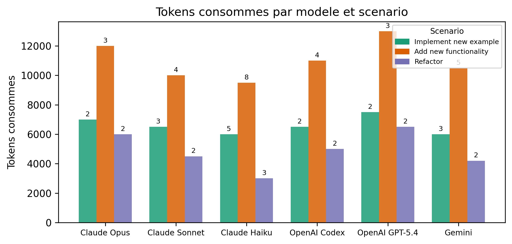
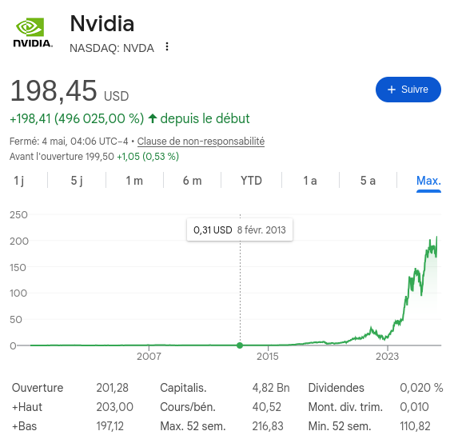

Outils IA pour la recherche
RETEX après 2 ans d’utilisation
2026-05-05
Mon interêt pour les outils IA
- Intérêt croissant depuis 2023 suite à un stage chez les Pompiers de Paris
- Utilisation régulière depuis 2024
- Codex, Copilot, Claude Code, NotebookLM, etc.



Activité 1: NotebookLM pour la revue de littérature et plus
NotebookLM (Google) permet de télécharger des documents et de poser des questions à leur sujet. Il peut être utilisé pour la revue de littérature, la synthèse, et plus encore.
URL : NotebookLM

Quelques points clés
- Notion de Context Window
- Taille des modeles et coût : choisir le bon outil pour la bonne tâche
- De l’importance du prompt pour guider les agents
- Validation humaine indispensable pour éviter les erreurs et les “hallucinations”